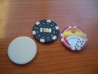
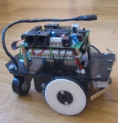
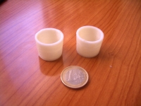
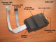
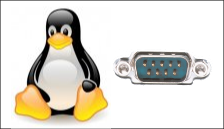
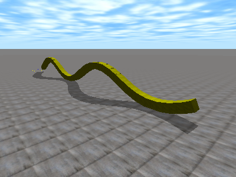
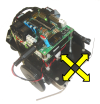
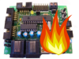

Juan Gonzalez:Proyectos
Contenido
[ocultar]Introducción
Recopilación de todos los proyectos en los que he estado trabajando. La mayoría hechos en mi tiempo libre
Están ordenados por Fecha de publicación en la web.
2010
| Unimod Robot modular Unimod | |
09/Marzo/2010 |
OpenMR Modular Robots plug-in for Openrave. |
23/Febrero/2010 |
OpenRave y robots modulares Simulacion de robots modulares usando el OpenRave |
| 11/Febrero/2009 |
Módulos MY1:Montaje Publicada documentación del Montaje de los módulos MY-1 |
| 28/Enero/2010/2009 |
Módulos MY1 Módulos de aluminio para la construcción de robots modulares. Compatibles con los Y1 |
| 23/Enero/2010/2009 |
Skypads_2.0 Tarjeta de prueba con 8 pulsadores en cruceta para conectarse a la Skypic |
| 22/Enero/2010/2009 |
Skypads 1.0 Tarjeta de prueba con 8 pulsadores para conectarse a la Skypic |
| 21/Enero/2010 |
Skycube:Montaje del portapilas Documentación de cómo montar el portapilas para usarse con la tarjeta Skycube |
| 18/Enero/2010 |
Micro-osciladores Versión 0.3. Control autónomo de la locomoción de robots modulares |


2009
| 25/Diciembre/2009 |
Monolito Biblioteca de componentes para Kicad |
| 22/Diciembre/2009 |
Cable FTDI Documentación sobre el cable FTDI para la descarga de firmware en la tarjeta Skycube 1.0 |
| 21/Diciembre/2009 |
Freeleds Información sobre la tarjeta Freeleds migrada al wiki |
| 06/Diciembre/2009 |
Módulos Y1 Página de la documentación migrada al wiki |
| 04/Diciembre/2009 |
Tarjeta Skycube 1.0 Control de robots modulares |
| 30/Noviembre/2009 |
Servos Futaba 3003 Cuaderno técnico migrado al wiki |


| 16/Septiembre/2009 | Programación del PIC16 en C |  Curso de programación. Forma parte del curso "Microcontroladores PIC: Arquitectura, Recursos y programación" que se dió en el CNU. Curso de programación. Forma parte del curso "Microcontroladores PIC: Arquitectura, Recursos y programación" que se dió en el CNU.
|
| 30/Julio/2009 | Ficha de casino |  Ficha de casino "imprimible" en una reprap |
| 29/Julio/2009 | Ruedas G3 para el Skybot |  Versión de las ruedas del Skybot imprimibles en una Reprap |
| 11/Junio/2009 | Objetos 3D |  Página índice con objetos 3D imprimibles |
| 10/Junio/2009 | Módulos REPY-1 |  Módulos REPY-1. Versión "3D-imprimible" de los módulos Y1. Cualquier los puede imprimir usando máquinas de tipo Reprap. Módulos REPY-1. Versión "3D-imprimible" de los módulos Y1. Cualquier los puede imprimir usando máquinas de tipo Reprap.
|
| 10/Mayo/2009 | Reprap:Electrónica |  Documentación sobre la electrónica de la Reprap Documentación sobre la electrónica de la Reprap
|
| 08/Mayo/2009 | USBtiny |  Documentación sobre el Grabador de micros AVRs USBtiny |
| 15/Abril/2009 | Micro-osciladores |  Movimiento autónomo de robots modulares usando los microcontroladores pic Movimiento autónomo de robots modulares usando los microcontroladores pic
|
| 20/Ene/2009 | Puerto serie en Linux |  Tutorial sobre Manejo del puerto serie en Linux. |
| 12/Ene/2009 | ODE y robots modulares |  Tutorial sobre la Simulación de robots ápodos modulares con ODE. Tutorial sobre la Simulación de robots ápodos modulares con ODE.
|


2008
| 26/Dic/2008 | Cube Simulator |  Simulación de la locomoción de robots ápodos. |
| 27/Oct/2008 | Skybot-test |  Aplicación gráfica para el control del robot Skybot y la visualización del estado de todos sus sensores. |
| 30/Sep/2008 | Pyburn |  Aplicación gráfica para la grabación a bajo nivel de la Skypic usando otra Skypic |
| 18/Jun/2008 | Wii-Board | Control de un Skybot con la Wii-board (Vídeo) (Blog) |
| 10/Jun/2008 | Tarri-wheel | Volante inalámbrico construido a partir del mando de la wii y una tarrina de CDs |
| 6/Mayo/2008 | MiniCube | Configuraciones mínimas. Robots modulares con el número mínimo de módulos que se pueden desplazar en 1D y 2D |
| 25/Abril/2008 | Hypercube | Robot modular tipo gusano de 8 módulos que se puede desplazar en 2D. |
| 13/Abril/2008 | Cube Revolutions | Robot modular tipo gusano de 8 módulos. [Migración al wiki] |
| 13/Enero/2008 | LibStargate | Libreria en Python para la creación de clientes para los stargates |


2007
| 9/Septiembre/2007 | Pydownloader | Carga de programas en la Skypic a través del bootloader |
| 26/Julio/2007 | PICP | Servidor para la grabación de microcontroladores PIC. [Migrado al wiki] |
| 26/Julio/2007 | Stargate | Comunicación con el exterior del PC. [Migrado al wiki] |
| 26/Julio/2007 | Skypic_down | Cliente Linux para la grabación de microcontroladores PIC a bajo nivel. [Migrado al wiki] |
| 26/Julio/2007 | Pic_downloader | Cliente para el PIC_Bootloader. Descarga de programas en la skypic para Linux |
| 25/Julio/2007 | PIC_Bootloader | Bootloader para los microcontroladores PIC16F876A |
| Junio/2007 | LibIris | Librería python para la Descarga de programas en la Skypic, a través del Bootloader |
| 30/Abril/2007 | Aplicación friki 2 | Control de un skybot con el mando de la wii al estilo “minority report” ;-) |
| 19/Abril/2007 | Aplicación friki 1 | Movimiento de un servo utilizando el mando de la wii. |
| 11/Abril/2007 | Cuaderno técnico 11 | Utilización del puerto serie desde Python (Módulo Pyserial) |
| 5/Abril/2007 | Módulo pyconsola_io | Lectura de teclas individuales del teclado, en Python, sin tener que esperar a pulsar enter |
2006
| 30/Mayo/2006 | Cuaderno técnico 9 | Cómo utilizar el Motor físico ODE. Ejemplos en C (I) |
2005
| 25/Diciembre/2005 | Cube Revolutions | Robot modular de tipo gusano de 8 módulos |
| 11/Diciembre/2005 | cube-virtual.mono | Programa para la generación automática de secuencias para el robot Cube Revolutions. |
| 24/Octubre/2005 | Monolito | Librería de componentes para Kicad. |
| 20/Octubre/2005 | Tarjeta Freeleds | Tarjeta de pruebas con 8 leds, para conectarse a la Skypic. |
| 30/Agosto/2005 | Chronopic-1.0 | [Proyecto Chronojump]: Tarjeta para la cronometrar el tiempo entre eventos producidos por una plataforma de contactos. |
| 23/Junio/2005 | Cuaderno técnico 8 | Instalación de ISE 7.1 y EDK 7.1 en una máquina GNU/Linux con Debian/Sarge |
| 15/Junio/2005 | Cuaderno técnico 7 | Grabación de la tarjeta Skypic usando otra Skypic |
| ---- | Proyecto Chronojump | Medición, gestión y estadísticas de las fases temporales de los saltos |
| 15/Enero/2005 | star-servos8 | [Proyecto Stargate]. Control de servos del tipo Futaba 3003 desde el PC |
2004
| 23/Agosto/2004 | Cuaderno técnico 6 | Desarrollo de aplicaciones multiplataforma Linux/Windows, para consola, con Cygwin. |
| 18/Agosto/2004 | Recursos I: rutina consola_io | Acceso directo al teclado, para hacer aplicaciones no-bloqueantes. |
| 15/Junio/2004 | Cuaderno técnico 5 | Grabación de Microcontroladores PICs usando la tarjeta CT6811 |
| 03/Junio/2004 | Skypic-down | Software para la grabación de microcontroladores PIC y en concreto, para la tarjeta SKYPIC. |
| 01/Junio/2004 | GPBOT-DOWN | Descarga de programas en la tarjeta GPBOT, para plataformas Linux |
| 27/Mayo/2004 | Tarjeta GPBOT: Guía Rápida | Información sobre la tarjeta GPBOT y ejemplos de programación en C y ensamblador |
| 22/Feb/2004 | Cliente Star-generic | Nuevo Cliente para los Stargates genéricos. La versión anterior se denominada g-sgc-generic. |
2003
| 29/Dic/2003 | Servidor sg-picp | [Proyecto Stargate]. Servidor que implementa el protoclo ICSP para la programación de los microcontroladores PIC de instrucciones de 14 bits. |
| 28/Dic/2003 | Cuaderno técnico 4 | Grabación de microcontroladores PIC. Explicación del protocolo ICSP de Microchip, que permite grabar los microcontroladores PIC. Esta información se ha empleado para la construcción de un grabador desde Linux, que se publicará más adelante. |
| 22/Dic/2003 | Diseño de Robots ápodos | Mi Trabajo de iniciación a la investigación (TEA) |
| 12/Dic/2003 | Cube Reloaded | Robot modular de tipo gusano con 4 módulos. |
| 23/Octubre/2003 | Proyecto Stargate | Comunicación fácil y rápida de las aplicaciones de un PC con el "mundo exterior" |
| 22/Octubre/2003 | Cliente g-sgc-generic | Cliente para los Stargates genéricos. |
| 21/Octubre/2003 | Libreria Libstargate | Librería para la implementación clientes que accedan a los Stargates. |
| 16/Octubre/2003 | Servidor servos8 | [Proyecto Stargate]: Servidor para el posicionamiento de 8 servos. |
| 12/Agosto/2003 | Módulos Y1 | Primera generación de módulos mecánicos para la construcción de robots modulares |
| 31/Julio/2003 | Cuaderno Técnico 3 | Servos Futaba 3003. Descripción de los servos Futaba 3003 y compatibles. Planos, Modelo virtual 3D, etc. |
| 28/Julio/2003 | Cuaderno Técnico 2 | Trucaje servos Futaba 3003. Descripción de cómo convertir los servos Futaba 3003 en motores de corriente continua para la construcción de robots móviles |
| 08/Julio/2003 | Microbot Tritt | Microbot muy sencillo con el que iniciarse en el mundo de la robótica |
| 21/Marzo/2003 | Servidor sg-generic | [Proyecto Stargate], Servidor Genérico, que implementa los servicios LOAD y STORE |
| 3/Marzo/2003 | Cuaderno técnico 1 | Comunicaciones serie. Aspectos prácticos del hardware de las comunicaciones serie: cables, pines, adaptación de niveles (max232), etc. |
| 21/Feb/2003 | Servidor sg-null | [Proyecto Stargate] Servidor Nulo que sólo implementa los servicios básicos de Ping e Identificación |
| 19/Feb/2003 | CUBE | El robot gusano que realicé como mi Proyecto final de carrera. |
| 28/Enero/2003 | Servidor sg-echo | [Proyecto Stargate] Servidor de ECO, que reenvía todo lo recibido por el puerto serie. |
| 04/Enero/2003 | Tarjeta CT6811 | Tarjeta entrenadora basada en el microcontrolador 68HC11 de Motorola. |
| 04/Enero/2003 | Microcontrolador 68HC11: Fundamentos, recursos y programación | Libro sobre el microcontrolador 68HC11. |
2002
| 02/Dic/2002 | Principales líneas de investigación en robots ápodos | Trabajo teórico sobre el estado del arte de los robots ápodos |
| 27/Agosto/2002 | SHEILA | Robot hexápodo de 3 servos |
| 16/Agosto/2002 | Programa XBT6811 | Manejo de 4 servos conectados a la tarjeta BT6811 |
| 16/Agosto/2002 | Cttools | Herramientas de trabajo para la tarjeta CT6811 |
| 15/Agosto/2002 | Librería Cts | Programación y control de la tarjeta CT6811 |
| 13/Agosto/2002 | G-SCTERM | Terminal de comunicaciones SERIE para GNOME-2 |
| 12/Abril/2002 | Servicio SMS | Un enfoque práctico. Aplicación GTERM |
| 12/Abril/2002 | SERCOM | Librería para comunicaciones SERIE. Basada en la GLIB-2.0 |
| 6/Abril/2002 | Tarjeta JPS-XPC84 | Tarjeta entrenadora para FPGA |
| 31/Marzo/2002 | NEWTON | Programa de simulación de cinemática de partículas |
| Marzo/2002 | Proyecto Labobot | Control de Servos a través de una FPGA, usando la tarjeta Labomat |
Enlaces
- Página personal de Juan González
Noticias
- 8/Mayo/2008: Migrado el anterior índice a esta página en el wiki